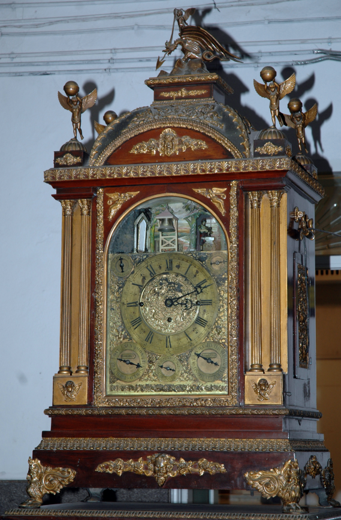

Musical Clock

The musical clock by Cook and Kelvi Company, England, is an English bracket clock made in the late 19th century and assembled in Calcutta. Salar Jung III, Nawab Mir Yusuf Ali Khan, probably acquired it from the company at the beginning of the 20th century. With more than 350 parts, it features a bearded toy figure that emerges three minutes before each hour and strikes the gong at the hour, while another blacksmith figure strikes every second. Its ornate metal fittings, three dials for the day, date and month, and chime every 15 minutes make it one of the museum's most attractive and popular artefacts.
संगीतमय घड़ी
संगीतमय घड़ी कुक एंड केल्वी कंपनी , इंग्लैंड 19 वीं शताब्दी ईस्वी LXXI-125 संगीतमय घड़ी यह अंग्रेज़ी शैली की ब्रैकेट घड़ी इंग्लैंड में निर्मित की गई थी तथा 19 वीं शताब्दी ईस्वी के उत्तरार्ध में इसका संयोजन ( असेंबली ) कलकत्ता में किया गया था। इसे सालार जंग तृतीय , नवाब मीर यूसुफ अली ख़ाँ (1889–1949 ई .) ने संभवतः 20 वीं शताब्दी ईस्वी के प्रारंभ में कुक एंड केल्वी कंपनी से प्राप्त किया था। इस घड़ी में 350 से अधिक पुर्ज़े लगे हैं। इसमें एक विशेष यांत्रिक व्यवस्था है , जिसके कारण प्रत्येक घंटे से तीन मिनट पहले दाढ़ी वाला एक छोटा खिलौना - पुरुष अपने कक्ष से बाहर आता है। वह घंटे के पूरे होने पर घंटे की संख्या के अनुसार घंटे पर लगी घंटी ( गोंग ) बजाता है और 60 वें मिनट के अंत में फिर अपने कक्ष में लौट जाता है। घड़ी में एक अन्य खिलौना - पुरुष , जो एक लोहार के रूप में दिखाई देता है , हाथ में हथौड़ा लिए बिना रुके प्रत्येक सेकंड पर प्रहार करता रहता है। सुंदर धातु अलंकरणों से सुसज्जित इस विशाल यांत्रिक घड़ी में समय के अतिरिक्त दिन , तिथि और माह दिखाने के लिए तीन अलग - अलग डायल हैं। यह प्रत्येक 15 मिनट पर भी मधुर ध्वनि करती है। यह संगीतमय घड़ी संग्रहालय की सबसे आकर्षक और लोकप्रिय कलाकृतियों में से एक है।
মিউজিক্যাল-ক্লক
এল এক্স এক্স আই – ১১৫ মিউজিক্যাল-ক্লক কুক এবং কেলভি কোং, ইংল্যান্ড দশম শতাব্দী এই ইংলিশ ব্র্যাকেট ক্লকটি ইংল্যান্ডে তৈরি এবং ১৯ শতকের শেষভাগে কলকাতা সংযোজন করা হয়েছিল বলে জানা যায়। নবাব মির্জ ইউসুফ আলী খান (স্যালারজং ৩য়, যার সময়কাল ১৮৮৯ থেকে ১৯৪৯ খ্রিষ্টাব্দ) সম্ভবত ২০ শতকের শুরুর দিকে কুক এবং কেলভি কোং-এর কাছ থেকে এটি সংগ্রহ করেন। এই বিশাল ঘড়িটিতে ৩৫০টিরও বেশি যন্ত্রাংশ রয়েছে। এর ভেতরের যান্ত্রিক ব্যবস্থার কারণে প্রতি ঘণ্টার ঠিক তিন মিনিট আগে ঘরের ভেতর থেকে দাড়িওয়ালা একজন মানুষের একটি ছোট খেলনা মূর্তি বেরিয়ে আসে। এরপর প্রতি ৬০তম মিনিট শেষ হওয়া মাত্র ঘণ্টার সংখ্যা অনুযায়ী কাঁসার পেতলে ততবার আঘাত করে সেটি আবার ভেতরে চলে যায়। এর ঠিক পাশেই একজন 'কামার' এর আরেকটি ছোট মূর্তি দেখা যায়, যে হাতুড়ি হাতে নিয়ে কোনো বিরতি ছাড়াই প্রতি সেকেন্ডে আঘাত করে চলেছে। সুন্দর ধাতব অলঙ্করণে সমৃদ্ধ এই সুবিশাল যান্ত্রিক ঘড়িটিতে প্রতি ১৫ মিনিটে সুর বাজার পাশাপাশি দিন, তারিখ এবং মাস দেখানোর জন্য তিনটি আলাদা ডায়াল রয়েছে। এই মিউজিক্যাল ক্লকটি স্যালারজং মিউজিয়ামের অন্যতম সেরা ও আকর্ষণীয় নিদর্শন।
સંગીતમય ઘડિયાળ
સંગીતમય ઘડિયાળ (મ્યુઝિકલ ક્લોક) કૂક એન્ડ કેલ્વે કંપની, ઇંગ્લેન્ડ સમયગાળો: ૧૯મી સદીના ઉત્તરાર્ધથી ૨૦મી સદીની શરૂઆત નોંધણી ક્રમાંક: LXXI - 125 આ અંગ્રેજી બ્રેકેટ ઘડિયાળનું નિર્માણ ઇંગ્લેન્ડમાં થયું હોવાનું અને ૧૯મી સદીના ઉત્તરાર્ધમાં કલકત્તામાં તેની જોડણી (એસેમ્બલ) કરવામાં આવી હોવાનું મનાય છે. સલાર જંગ તૃતીય, નવાબ મીર યુસુફ અલી ખાને (ઈ.સ. ૧૮૮૯ - ૧૯૪૯) આ ઘડિયાળ કૂક એન્ડ કેલ્વે કંપની પાસેથી સંભવતઃ ૨૦મી સદીની શરૂઆતમાં મેળવી હતી. આ ઘડિયાળમાં ૩૫૦ કરતાં વધુ પૂર્જાઓ (ભાગો) છે. તેની વિશેષતા એ છે કે તેમાં એક એવી યાદગાર યાંત્રિક પદ્ધતિ (મકેનિઝમ) છે, જેના દ્વારા દર કલાક પૂરો થવામાં ત્રણ મિનિટ બાકી હોય ત્યારે એક દાઢીવાળી નાની રમકડા જેવી આકૃતિ તેની અંદરથી બહાર આવે છે અને ૬૦ મિનિટ પૂરી થતાં જ સંબંધિત કલાક મુજબ ઘંટડી પર હથોડી વડે કલાકના આંકડા જેટલા પ્રહાર કરે છે, અને પછી પાછી અંદર જતી રહે છે. આ ઉપરાંત, એક બીજું રમકડા જેવું લુહારનું પાત્ર હાથમાં હથોડી પકડીને કોઈપણ જાતના વિરામ વગર સતત સેકન્ડો દર્શાવતું નજરે પડે છે. સુંદર કોતરણીવાળા ધાતુના સ્ટેન્ડથી સજ્જ આ વિશાળ યાંત્રિક ઘડિયાળમાં દર ૧૫ મિનિટે રણકાર (ચીમ) વાગવા ઉપરાંત વાર , તારીખ અને મહિના દર્શાવતા ત્રણ ડાયલ પણ આપવામાં આવ્યા છે. આ સંગીતમય ઘડિયાળ સંગ્રહાલયની સૌથી આકર્ષક કલાકૃતિઓમાંની એક છે.
ಸಂಗೀತ ಗಡಿಯಾರ
ಸಂಗೀತ ಗಡಿಯಾರ ಕುಕ್ ಮತ್ತು ಕೆಲ್ವಿ ಕಂಪನಿ . ಇಂಗ್ಲೆಂಡ್ ಕ್ರಿ. ಶ. 10ನೇ ಶತಮಾನ LXXI-125 ಈ ಇಂಗ್ಲಿಷ್ ಬ್ರಾಕೆಟ್ ಗಡಿಯಾರವನ್ನು 19 ನೇ ಶತಮಾನದ ಕೊನೆಯಲ್ಲಿ ಇಂಗ್ಲೆಂಡ್ನಲ್ಲಿ ತಯಾರಿಸಿ , ಜೋಡ ಣೆ ಅಥವಾ ಅಸೆಂಬಲ್ ಅನ್ನು ಕಲ್ಕತ್ತಾದಲ್ಲಿ ಮಾಡಲಾಯಿತು ಎಂದು ಹೇಳಲಾಗುತ್ತದೆ . ಇದನ್ನು III ನೇ ಸಾಲಾರ್ ಜಂಗ್ , ನವಾಬ್ ಮೀರ್ ಯೂಸುಫ್ ಅಲಿ ಖಾನ್ (ಕ್ರಿ.ಶ. 1889 - 1949) ಅವರು ಬಹುಶಃ 20 ನೇ ಶತಮಾನದ ಆರಂಭದಲ್ಲಿ ' ಕುಕ್ ಮತ್ತು ಕೆಲ್ವಿ ಕಂಪನಿ ' ಯಿಂದ ಪಡೆದುಕೊಂಡಿದ್ದರು. ಇದು 350 ಕ್ಕೂ ಹೆಚ್ಚು ಭಾಗಗಳನ್ನು ಹೊಂದಿದೆ. ಈ ಗಡಿಯಾರದಲ್ಲಿ ಒಂದು ವಿಶೇಷ ಯಾಂತ್ರಿಕ ವ್ಯವಸ್ಥೆಯಿದ್ದು , ಅದರಂತೆ ಪ್ರತಿಯೊಂದು ಗಂಟೆ ಮುಗಿಯುವುದಕ್ಕೆ ಮೂರು ನಿಮಿಷಗಳ ಮೊದಲು ಗಡ್ಡವಿರುವ ವ್ಯಕ್ತಿಯೊಬ್ಬನ ಸಣ್ಣ ಆಟಿಕೆ ಯು ಮುಂಭಾಗದ ಕೋಣೆಯಿಂದ ಹೊರಬರುತ್ತದೆ ಮತ್ತು ಪ್ರತಿ 60 ನೇ ನಿಮಿಷದ ಅಂತ್ಯಕ್ಕೆ ಸರಿಯಾಗಿ ಗಂಟೆಯ ಸಂಖ್ಯೆಗೆ ತಕ್ಕಂತೆ ಲೋಹದ ಜಾಗಟೆಗೆ ಹೊಡೆದು ಮತ್ತೆ ಒಳಗೆ ಹೋಗುತ್ತದೆ. ಗಡಿಯಾರದಲ್ಲಿ ಕಾಣಿಸುವ ಮತ್ತೊಬ್ಬ ಆಟಿಕೆ ವ್ಯಕ್ತಿಯ ಬೊಂಬೆಯು ಸುತ್ತಿಗೆಯನ್ನು ಹಿಡಿದು ಯಾವುದೇ ತಡೆಯಿಲ್ಲದೆ ಪ್ರತಿ ಸೆಕೆಂಡುಗಳಿಗೆ ತಕ್ಕಂತೆ ಹೊಡೆಯುತ್ತಿರುತ್ತದೆ. ಕಲಾತ್ಮಕ ಲೋಹದ ಅಲಂಕಾರಗಳಿಂದ ಸಮೃದ್ಧವಾಗಿರುವ ಈ ಬೃಹತ್ ಯಾಂತ್ರಿಕ ಗಡಿಯಾರವು ಪ್ರತಿ 15 ನಿಮಿಷಕ್ಕೊಮ್ಮೆ ಶಬ್ದ ಮಾಡುವುದರ ಜೊತೆಗೆ ದಿನ , ದಿನಾಂಕ ಮತ್ತು ತಿಂಗಳನ್ನು ತೋರಿಸಲು ಮೂರು ಪ್ರತ್ಯೇಕ ಡಯಲ್ಗಳನ್ನು ಹೊಂದಿದೆ. ಈ ಸಂಗೀತ ಗಡಿಯಾರವು ವಸ್ತುಸಂಗ್ರಹಾಲಯ ದ ಅತ್ಯಂತ ಆಕರ್ಷಕ ಕಲಾಕೃತಿಗಳಲ್ಲಿ ಒಂದಾಗಿದೆ.
സംഗീത ഘടികാരം
സംഗീത ഘടികാരം ( MUSICAL- CLOCK ) കുക്ക് ആൻഡ് കെൽവി കമ്പനി ഇംഗ്ലണ്ട് 10-ാം നൂറ്റാണ്ട്. LXXI-125 പത്തൊൻപതാം നൂറ്റാണ്ടി ന്റെ അവസാനത്തി ൽ ഇംഗ്ലണ്ടി ൽ നിർമ്മിക്കുകയും കൽക്കട്ടയി ൽ കൂട്ടിയോജിപ്പി ക്കു കയും ചെയ്തതായി പറയപ്പെടുന്ന ഒരു ഇംഗ്ലീഷ് ബ്രാക്കറ്റ് ക്ലോക്ക് ആണിത്. സാരാർ ജംഗ് മൂന്നാമനായ നവാബ് മീർ യൂസഫ് അലി ഖാൻ (എ.ഡി. 1889 - 1949), ഏകദേശം ഇരുപതാം നൂറ്റാണ്ടി ന്റെ തുടക്കത്തിൽ കുക്ക് ആൻഡ് കെൽവി കമ്പനിയി ൽ നി ന്നാണ് ഇത് സ്വന്തമാക്കിയത് . ഇതിന് 350-ലധികം ഭാഗങ്ങളുണ്ട്. ഓരോ മണിക്കൂറും തികയുന്നതിന് മൂന്ന് മിനിറ്റ് മുൻപ് ഒരു ചെറിയ താടിക്കാരൻ കളിപ്പാവ രൂപം ഉള്ളിലെ അറയിൽ നിന്ന് പുറത്തുവരികയും , കൃത്യം 60- ാമത്തെ മിനിറ്റ് അവസാനിക്കുമ്പോൾ ആ മണിക്കൂറിന് അനുസരിച്ചുള്ള എണ്ണം മണി അടിച്ചു തീർത്ത ശേഷം തിരികെ അകത്തേക്ക് പോവുകയും ചെയ്യുന്ന ഒരു സംവിധാനം ഈ ക്ലോക്കിലുണ്ട് . ഒരു ' കൊല്ല ന്റെ ' രൂപത്തിലുള്ള മറ്റൊരു കളിപ്പാവ കൈയിൽ ചുറ്റിക പിടിച്ചുകൊണ്ട് യാതൊരു തടസ്സവുമില്ലാതെ സെക്കൻഡുകൾ അടയാളപ്പെടുത്തി അടിക്കുന്നത് കാണാം . മനോഹരമായി നിർമ്മിച്ച ലോഹ മൗ ണ്ടുകളാ ൽ സമ്പന്നമായ ഈ വലിയ മെക്കാനിക്ക ൽ ക്ലോക്കി ൽ ഓരോ 15 മിനിറ്റിലും നാദം മുഴങ്ങുന്നതിന് പുറമെ ദിവസം , തീയതി , മാസം എന്നിവയ്ക്കായി മൂന്ന് ഡയലുകളുണ്ട് . മ്യൂസിയത്തിലെ ഏറ്റവും ആകർഷകമായ കരകൌശല വസ്തുക്കളിൽ ഒന്നാണ് ഈ സംഗീത ഘടികാരം .
संगीतमय घड्याळ
संगीतमय घड्याळ कुक आणि केल्वी कंपनी इंग्लंड इसवी सन 10 वे शतक. LXXI-125 हे इंग्लिश ब्रॅकेट घड्याळ इंग्लंडमध्ये बनवले गेले आणि इसवी सन 19 व्या शतकाच्या उत्तरार्धात कलकत्ता येथे जोडले गेले असे मानले जाते . हे घड्याळ सालार जंग तिसरे , नवाब मीर युसूफ अली खान ( इसवी सन 1889 - 1949 ) यांनी कूक अँड केलव्हे कंपनी कडून बहुधा इसवी सन 20 व्या शतकाच्या सुरुवातीला प्राप्त केले होते . यात 350 हून अधिक भाग आहेत . या घड्याळात एक अशी यंत्रणा आहे , ज्याद्वारे दाढी असलेल्या माणसाची एक छोटी खेळण्यातील आकृती प्रत्येक तासाच्या तीन मिनिटे आधी आतून बाहेर येते आणि 60 वे मिनिट संपताना गोंगवर संबंधित तासांइतके टोले वाजवून परत आत जाते . दुसरा एक लोहार असलेला खेळण्यातील माणूस हातात हातोडा घेऊन न थांबता सेकंदांचे टोले मारताना दिसतो . सुंदर घडण असलेल्या धातूच्या आच्छादनांनी सजवलेल्या या विशाल यांत्रिक घड्याळात दर 15 मिनिटांनी टोले वाजण्याव्यतिरिक्त वार , दिनांक आणि महिना दर्शवणारे तीन डायल आहेत . हे सांगीतिक घड्याळ संग्रहालयातील सर्वात आकर्षक कलाकृतींपैकी एक आहे .
ସଙ୍ଗୀତ ଘଡ଼ି
ସଙ୍ଗୀତ ଘଡ଼ି କୁକ୍ ଆଣ୍ଡ୍ କେଲଭି କୋ . ଇଂଲଣ୍ଡ ଖ୍ରୀଷ୍ଟାବ୍ଦ 10 ମ ଶତାବ୍ଦୀ LXXI-125 ଏହି ଇଂରାଜୀ ବ୍ରାକେଟ୍ ଘଡ଼ିଟି ୧୯ ଶ ଶତାବ୍ଦୀର ଶେଷ ଭାଗରେ ଇଂଲଣ୍ଡରେ ତିଆରି ହୋଇ କଲିକତାରେ ସଂଗୃହୀତ ହୋଇଥିବା କୁହାଯାଏ। ଏହାକୁ ସାଲାର ଜଙ୍ଗ ୩ୟ , ନବାବ ମୀର୍ ୟୁସୁଫ୍ ଅଲି ଖାଁ ( ଖ୍ରୀଷ୍ଟାବ୍ଦ ୧୮୮୯ - ୧୯୪୯ ) କୁକ୍ ଆଣ୍ଡ ୍ କେଲଭି କମ୍ପାନୀଠାରୁ ସମ୍ଭବତଃ ୨୦ ଶ ଶତାବ୍ଦୀର ପ୍ରାରମ୍ଭରେ ସଂଗ୍ରହ କରିଥିଲେ। ଏଥିରେ ୩୫୦ରୁ ଅଧିକ ପାର୍ଟସ୍ ବା ଯନ୍ତ୍ରାଂଶ ରହିଛି। ଏହି ଘଡ଼ିରେ ଏପରି ଏକ କୌଶଳ ରହିଛି ଯେଉଁଥିରେ ପ୍ରତି ଘଣ୍ଟାର ତିନିମିନିଟ୍ ପୂର୍ବରୁ ଜଣେ ଦାଢ଼ିଆ ବ୍ୟକ୍ତି ଭଳି ଏକ ଛୋଟ ଖେଳନା ମୂର୍ତ୍ତି ବାକ୍ସ ଭିତରୁ ବାହାରିଆସେ ଏବଂ ପ୍ରତି ୬୦ ମିନିଟ୍ ଶେଷରେ ଗୋଙ୍ଗ୍ ବା ଘଣ୍ଟି ଉପରେ ସେହି ଅନୁସାରେ ଘଣ୍ଟା ବଜାଇ ପୁଣି ଭିତରକୁ ଚାଲିଯାଏ। ଅନ୍ୟ ଏକ ଖେଳନା ବ୍ୟକ୍ତି , ଯିଏ କି ଜଣେ ' ଲୁହାର ' ପରି ଦୃଶ୍ୟମାନ ହୁଅନ୍ତି , ସେ ହାତଧରି ବିନା କୌଣସି ବିରତିରେ ସେକେଣ୍ଡ ଗଣିଲା ଭଳି ହାତୁଡ଼ି ପିଟୁଥିବାର ନଜର ଆସନ୍ତି। ସୁନ୍ଦର ଭାବରେ ତିଆରି ହୋଇଥିବା ଧାତବ ଫିଟିଂରେ ସଜ୍ଜିତ ଏହି ବିଶାଳ ଯାନ୍ତ୍ରିକ ଘଡ଼ିରେ ପ୍ରତି ୧୫ ମିନିଟ୍ରେ ଧ୍ୱନି ସୃଷ୍ଟି କରିବା ସହିତ ଦିନ , ତାରିଖ ଏବଂ ମାସ ପ୍ରଦର୍ଶନ ପାଇଁ ତିନୋଟି ଡାଏଲ୍ ମଧ୍ୟ ରହିଛି। ଏହି ସଙ୍ଗୀତମୟ ଘଡ଼ିଟି ସଂଗ୍ରହାଳୟର ସବୁଠାରୁ ଆକର୍ଷଣୀୟ କଳାକୃତିଗୁଡ଼ିକ ମଧ୍ୟରୁ ଗୋଟିଏ ।
సంగీత గడియారం
సంగీత గడియారం కుక్ మరియు కెల్వీ కంపెనీ , ఇంగ్లాండ్ క్రీ.శ. 10వ శతాబ్దం. LXXI-125 ఈ ఇంగ్లీష్ బ్రాకెట్ క్లాక్ ( Bracket Clock ) ఇంగ్లాండ్లో తయారై , క్రీ.శ. 19 వ శతాబ్దపు చివరిలో కలకత్తాలో అసెంబుల్ చేయబడిందని చెబుతారు. దీనిని నవాబ్ మీర్ యూసుఫ్ అలీ ఖాన్ - సాలార్ జంగ్ III ( క్రీ.శ. 1889 - 1949 ) , క్రీ.శ. ఇరవైవ శతాబ్దపు ప్రారంభంలో ' కుక్ అండ్ కేల్వీ కంపెనీ ' నుండి సేకరించారు. ఈ గడియారంలో 350 కంటే ఎక్కువ విడిభాగాలు ఉన్నాయి. ఈ గడియారపు యంత్రాంగంలో ఒక ప్రత్యేకత ఉంది: ప్రతి గంట పూర్తవ్వడానికి మూడు నిమిషాల ముందు గడ్డం ఉన్న ఒక చిన్న బొమ్మ రూపం లోపలి గది నుండి బయటకు వచ్చి , 60 వ నిమిషం పూర్తయ్యే సరికి సంబంధిత గంటల సంఖ్యకు అనుగుణంగా గంట పై కొట్టి మళ్లీ లోపలికి వెళ్తుంది. అలాగే ‘కమ్మరి’ రూపులో ఉన్న మరొక బొమ్మ చేతిలో సుత్తి పట్టుకుని , ఎలాంటి విరామం లేకుండా ప్రతి సెకనుకు కొడుతూ ఉంటుంది. అందమైన లోహపు అమరికలతో ( mounts ) ఉన్న ఈ భారీ యాంత్రిక గడియారంలో ప్రతి 15 నిమిషాలకు మోగే మోతతో పాటు రోజు , తేదీ మరియు నెలను చూపే మూడు ప్రత్యేక డయల్స్ ( dials ) ఉన్నాయి. ఈ సంగీత గడియారం మ్యూజియంలోని అత్యంత ఆకర్షణీయమైన కళాఖండాలలో ఒకటి .
இசைக் கடிகாரம்
இசைக் கடிகாரம் குக் அண்ட் கெல்வி கம்பெனி இங்கிலாந்து கிபி 10ஆம் நூற்றாண்டு. LXXI-125 இசை எழுப்பும் கடிகாரம் குக் அண்ட் கெல்வி நிறுவனம் , இங்கிலாந்து கி.பி. 19- ஆம் நூற்றாண்டு LXXI -125 இங்கிலாந்தில் தயாரிக்கப்பட்டு , கல்கத்தாவில் பாகங்கள் ஒன்றிணைக்கப்பட்டதாகக் கருதப்படும் இந்த ' பிராக்கெட் ' வகை ஆங்கிலேயக் கடிகாரம் , கி.பி. 1889 முதல் 1949 வரை ஆட்சி செய்த மூன்றாம் சலார் ஜங் கான நவாப் மிர் யூசுப் அலி கானால் குக் அண்ட் கெல்வி நிறுவனத்திடமிருந்து வாங்கப்பட்டது ; இது அநேகமாக கி.பி. 20- ஆம் நூற்றாண்டின் தொடக்கத்தில் நிகழ்ந்திருக்கலாம். முந்நூற்று ஐம்பது க்கும் மேற்பட்ட பாகங்களைக் கொண்ட இந்தக் கடிகாரத்தில் ஒரு சிறப்பான இயங்குமுறை உள்ளது: ஒவ்வொரு மணிநேரத்திற்கும் மூன்று நிமிடங்களுக்கு முன்னதாக , தாடி வைத்த ஒரு மனித உருவம் கொண்ட பொம்மை அதன் அறையிலிருந்து வெளியே வருகிறது ; பின்னர் 60- வது நிமிடம் முடிவடையும்போது , அந்த மணிநேரத்தைக் குறிக்கும் வகையில் மணியை அடித்துவிட்டு மீண்டும் உள்ளே செல்கிறது. அதேவேளையில் , சுத்தியலைக் கையில் ஏந்தியவாறு கொல்லர் போன்ற தோற்றமளிக்கும் மற்றொரு பொம்மை , ஒரு சுத்தியலைப் பிடித்துக்கொண்டு எந்த இடைவெளியுமின்றி வினாடிகளைக் குறித்துக்கொண்டே இருக்கும். அழகிய உலோக அலங்கார வேலைப்பாடுகளுடன் கூடிய இந்த மிகப்பெரிய இயந்திர கடிகாரத்தில் , ஒவ்வொரு 15 நிமிடங்களுக்கும் ஒலி எழுப்பும் வசதியுடன் கிழமை , தேதி மற்றும் மாதத்தைக் காட்டும் மூன்று தனித்தனி வட்ட முகப்புகளைக் கொண்டுள்ளது. இந்த இசை கடிகாரம் அருங்காட்சியகத்தில் உள்ள மிகக் கவர்ச்சிகரமான கலைப்பொருட்களில் ஒன்றாகும்.
موسیقی کی گھڑی
موسیقی کی گھڑی کوک اینڈ کیلوی کمپنی انگلینڈ دسو ی ں صد ی ع ی سو ی LXXI-125 یہ ایک خوبصورت انگریزی طرز کی بریکٹ گھڑی ہے، جس کے بارے میں کہا گیا ہے کہ اسے انگلینڈ میں تیار کیا گیا اور انیسویں صدی عیسوی کے آخری دور میں کلکتہ میں پرزے جوڑ کر مکمل کیا گیا۔ اسے سالار جنگ سوم، نواب میر یوسف علی خان (1889ء تا 1949ء) نے غالباً بیسویں صدی عیسوی کے ابتدائی زمانے میں کوک اینڈ کیلوی کمپنی سے حاصل کیا تھا۔اس گھڑی میں 350 سے زیادہ پرزے شامل ہیں۔ اس میں ایک منفرد نظام موجود ہے، جس کے ذریعے ایک داڑھی والے شخص کا چھوٹا سا مجسمہ نما کھلونا ہر گھنٹے سے تین منٹ پہلے اپنے حصار سے باہر آتا ہے اور مقررہ وقت پر گھنٹی بجا کر گھنٹوں کی تعداد ظاہر کرتا ہے۔ پھر ہر 60ویں منٹ کے اختتام پر واپس اپنی جگہ چلا جاتا ہے۔اس کے علاوہ ایک اور کھلونا نما شخص، جو لوہار کی شکل میں دکھائی دیتا ہے، ہاتھ میں ہتھوڑا لیے مسلسل سیکنڈ بجانے کا منظر پیش کرتا ہے۔ دھاتی کام سے مزین یہ بڑی میکانی گھڑی ہر 15 منٹ بعد گھنٹی بجانے کے نظام کے ساتھ ساتھ دن، تاریخ اور مہینے کے لیے تین الگ ڈائل بھی رکھتی ہے۔ یہ موسیقی کی گھڑی میوزیم میں موجود سب سے زیادہ دلکش، منفرد اور قابل قدر نوادرات میں سے ایک ہے۔